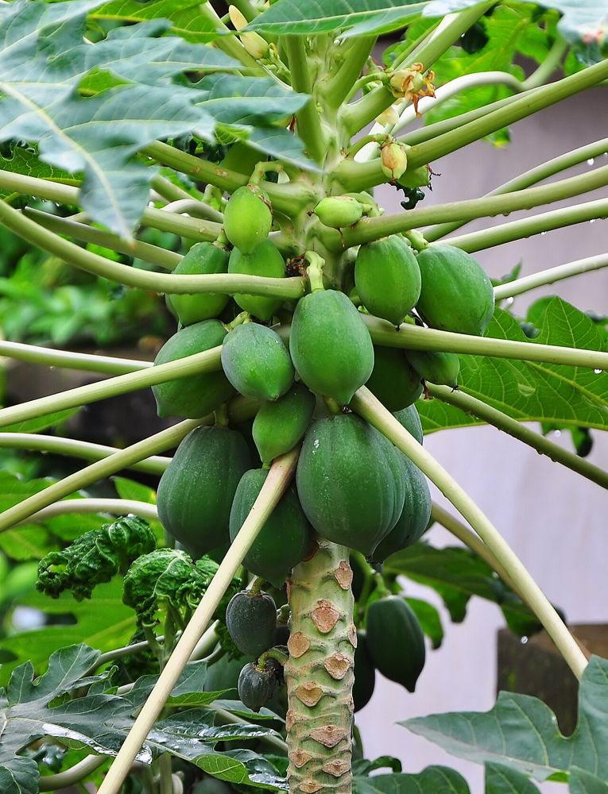

🌿 சித்த மருத்துவக் குறிப்பு:
பழுத்த பப்பாளி செரிமானத்தை மேம்படுத்தி மலச்சிக்கலைப் போக்கும். டெங்கு காய்ச்சலின்போது பப்பாளி இலைச் சாறு பாரம்பரியமாகப் பயன்படுகிறது – மருத்துவர் ஆலோசனையுடன் மட்டும். (கர்ப்பிணிகள் பப்பாளிக் காய், அரைப்பழம் உண்பதைத் தவிர்க்கவும்.)
உங்களுக்குத் தெரியுமா?
1ஆண் மரம், பெண் மரம், இருபால் மரம்
பப்பாளியில் மூன்று வகை மரங்கள் உண்டு. ஆண் மரத்தில் பூக்கள் நீண்ட காம்புகளில் கொத்தாகத் தொங்கும்; பெண் மரத்தில் பெரிய பூக்கள் தண்டை ஒட்டியே பூக்கும். பெண், இருபால் மரங்களே நல்ல பழம் தரும். ஆண் மரம் பெரும்பாலும் காய்க்காது; சில சமயம் நீண்ட காம்பில் சிறிய நீளக் காய்கள் தரும்.
2மரமல்ல, பெரிய செடி
பப்பாளி உண்மையில் மரம் அல்ல – உள்ளே வெற்றிடமுள்ள தண்டு கொண்ட மிகப்பெரிய செடி. நட்ட ஒரு வருடத்திற்குள்ளேயே பழம் தரத் தொடங்கும்.
3இறைச்சியை மென்மையாக்கும் பால்
பப்பாளிக் காயிலிருந்து வரும் பாலில் உள்ள "பப்பைன்" என்ற நொதி இறைச்சியை மென்மையாக்கவும், மருந்துத் தயாரிப்பிலும் பயன்படுகிறது.
இந்தத் தகவல் பயனுள்ளதாக இருந்ததா?